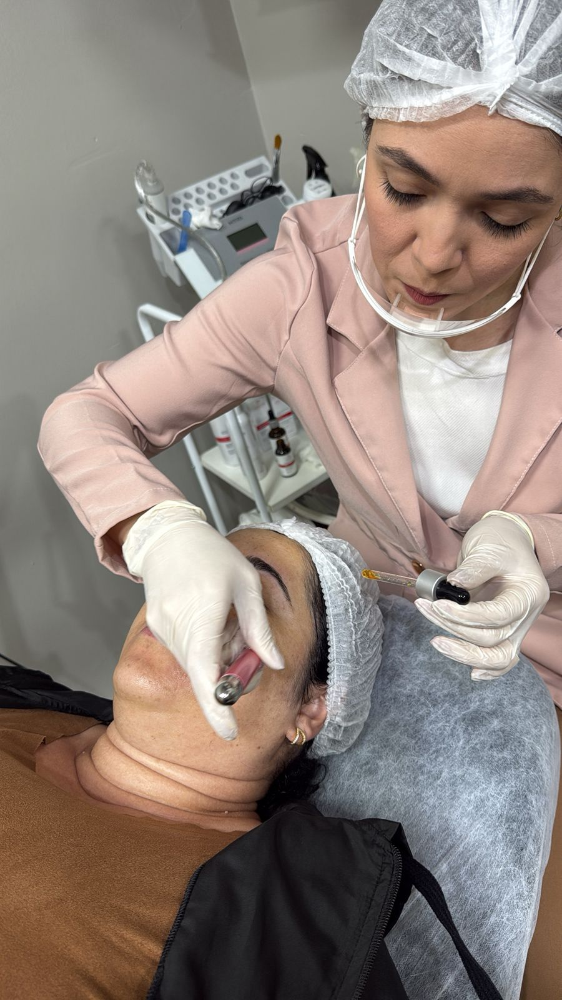

Pele oleosa, cravos, aspecto cansado
Uma sessão para retirar o que cremes não alcançam: cravos, células mortas e impurezas acumuladas. Você sai com a pele leve, viva e pronta pra absorver tudo que vier depois.
Limpeza de pele profundaTratamentos faciais e corporais conduzidos por uma fisioterapeuta dermatofuncional, no conforto da sua casa. Sem deslocamento, sem sala de espera, sem expor sua pele recém-tratada ao sol da volta.
Sua pele tem cravos, oleosidade ou aquele aspecto cansado que produto de prateleira não resolve.
Manchas, melasma ou marcas de acne que insistem em aparecer toda vez que você se olha no espelho.
Inchaço, sensação de peso ou recuperação de cirurgia plástica que pede drenagem feita por quem sabe.
Falta tempo, agenda apertada, ou você simplesmente prefere ser cuidada sem precisar sair de casa.
Você já teve experiência ruim em salão de beleza e quer alguém com formação clínica de verdade cuidando da sua pele.
Você quer cuidar da pele com seriedade — não trocando de promessa milagrosa toda semana, mas com um plano de verdade.

Sou fisioterapeuta formada há oito anos, dos quais sete dedicados à estética clínica — algumas mulheres começaram comigo querendo se livrar de uma marca de acne, outras vieram pra drenar depois de uma cirurgia, e várias hoje voltam toda estação só porque entenderam o que é ser cuidada com atenção de verdade.
Escolhi atender exclusivamente em domicílio porque acredito que cuidar da pele não deveria ser mais uma corrida na sua agenda. Levo até você toda a estrutura, os materiais e os protocolos de higiene de um atendimento clínico — para que o seu tempo de cuidado seja, antes de tudo, um tempo seu.
Nada de pacote pronto. Toda jornada começa com uma avaliação — a partir do que você vive na sua pele e do que quer alcançar, monto um protocolo com sessões definidas e orientação de cuidado em casa.
Uma sessão para retirar o que cremes não alcançam: cravos, células mortas e impurezas acumuladas. Você sai com a pele leve, viva e pronta pra absorver tudo que vier depois.
Limpeza de pele profundaRenovação celular controlada que clareia manchas, suaviza marcas e devolve uniformidade ao tom da pele. O ativo é escolhido conforme o que sua pele realmente precisa — e suporta.
Peeling químicoO estímulo certo para o colágeno voltar a trabalhar para você. Resultado progressivo, sessão por sessão — a pele que você reconhece no espelho, só que firme e renovada.
MicroagulhamentoProtocolos combinados para devolver luminosidade à sua pele — tratando a causa, não só o que aparece. Um plano honesto sobre quanto tempo leva, e o que fazer pra manchas não voltarem.
Tratamento de manchasToque profissional que ativa a circulação, reduz inchaço e acelera a recuperação de cirurgia plástica. Com formação específica em pré e pós-operatório — o tipo de drenagem que faz diferença no resultado final.
Drenagem linfáticaMarque uma avaliação. Conversamos sobre sua pele, seu histórico e o que você quer alcançar — e saio com um plano claro, de quantas sessões, com qual intervalo, com que custo. Sem compromisso de fechar pacote ali.
Avaliação personalizadaEncontrei a Maísa por acaso no Instagram e ela prontamente me passou contato e endereço. Marcamos o procedimento e fui atendida no mesmo dia. Gostei bastante, pois ela explica cada passo do processo, orienta como se deve proceder depois e te deixa à vontade para tirar dúvidas. O ambiente é bem localizado e tranquilo. Super indico.
Adorei minha limpeza de pele! Super profissional e cuidadosa. Recomendo muito!
Fiz uma limpeza de pele com a Dra. Maísa, o resultado foi simplesmente maravilhoso. Recomendo o trabalho — além de ser uma excelente profissional, é uma pessoa incrível.
A Dra. Maísa é uma profissional maravilhosa. Atendimento impecável, repleto de carinho, cuidado e dedicação.
Ótimo atendimento e resultado muito satisfatório. Com certeza farei novamente!
Sensação de rejuvenescimento. Pele com uma aparência indescritível. Super indico — amei tudo.
Reuni aqui o que mais me perguntam no primeiro contato. Se a sua dúvida não estiver na lista, me chama no WhatsApp — respondo pessoalmente, sem robô e sem script.
Tirar minha dúvida agoraTrabalho exclusivamente em domicílio. Levo a estrutura, os equipamentos e o protocolo de higiene até você — para que seu cuidado aconteça no ambiente onde você está mais à vontade.
Atendo um número limitado de clientes por semana para garantir tempo e dedicação a cada uma. Vamos conversar?
Quero falar com a Maísa